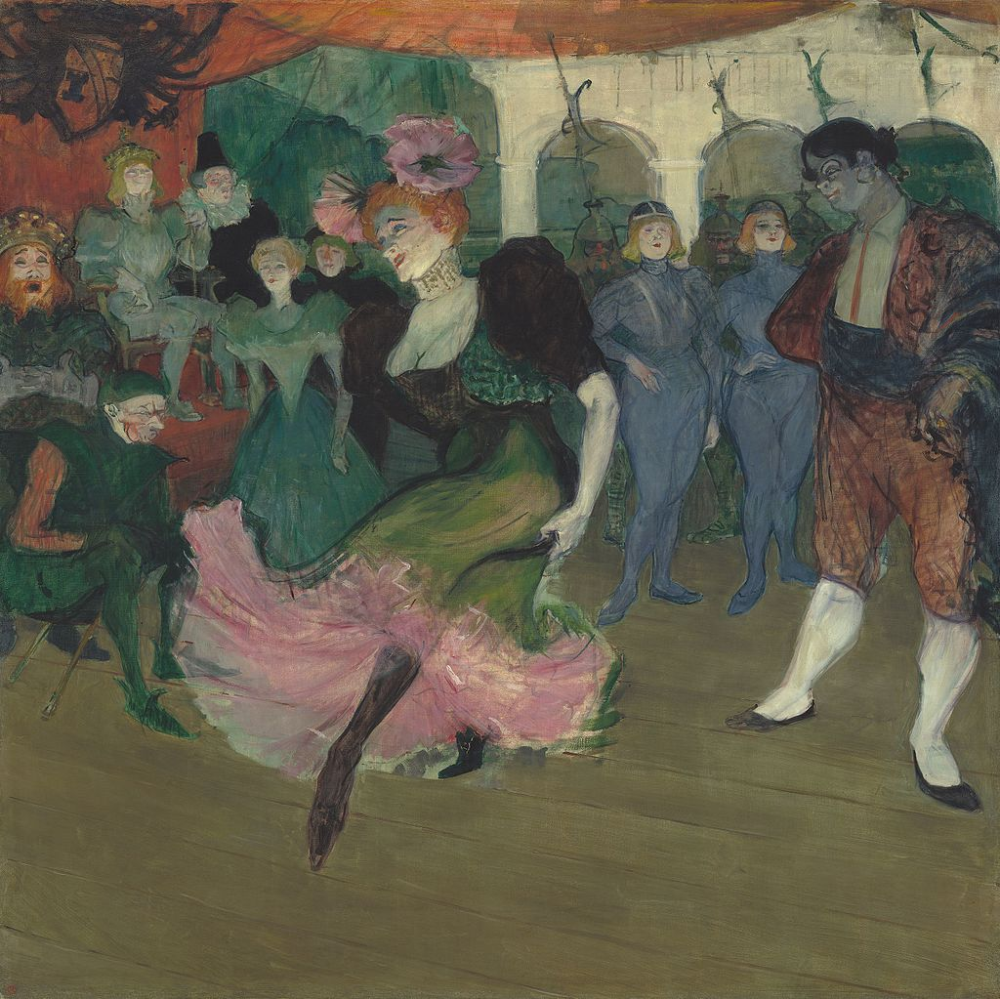

<head>
<meta charset="UTF-8" />
<meta name="keywords" content="drawing, painting" />
<meta name="description" content="drawings by Sunjy" />
<title>Sunjy</title>
<link rel="shortcut icon" type="image/x-icon" href="../../mImages/mCommon/favicon.ico" media="screen" />
<link rel="stylesheet" type="text/css" href="../../mCsses/mCommon/mCssA.css" />
<link rel="stylesheet" type="text/css" href="../../mCsses/mCommon/mCssB.css" />
<link rel="stylesheet" type="text/css" href="../../mCsses/mCommon/mCssC.css" />
<link rel="stylesheet" type="text/css" href="../../mCsses/mCommon/mCssD.css" />
<link rel="stylesheet" type="text/css" href="../../mCsses/mContent/mCssA.css" />
<link rel="stylesheet" type="text/css" href="../../mCsses/mContent/mCssB.css" />
<link rel="stylesheet" type="text/css" href="../../mCsses/mContent/mCssC.css" />
<link rel="stylesheet" type="text/css" href="../../mCsses/mContent/mCssD.css" />
</head>
<script type="text/javascript" src="../../mScripts/mContent/mContentAA.js" /></script>
<script type="text/javascript" src="../../mScripts/mContent/mContentAB.js" /></script>
<script type="text/javascript" src="../../mScripts/mContent/mContentAC.js" /></script>
<script type="text/javascript" src="../../mScripts/mContent/mContentAD.js" /></script>
<script type="text/javascript"></script> 
<script type="text/javascript">
document.write('<div class="mImgAbsolute"></div>');
/*
document.write('<p class="mFontSizeBColor" />From a white paper...</p>');
document.write('<table class="center"><tr><td>');
document.write('');
document.write('</td></tr></table>');
*/
</script>


<script type="text/javascript">
document.write('<p class="mFontSizeBColor" />Marcelle Lender Dancing the Bolero in “Chilpéric” </p>');
document.write('<p class="mFontSizeSColor" />Marcelle Lender Dancing the Bolero in “Chilpéric” by Henri de Toulouse-Lautrec depicts the artist’s favorite subject from the theater, Marcelle Lender, the red-headed actress.<br><br>Toulouse-Lautrec first encountered her when he began to attend the theater regularly, in 1893. His infatuation with her peak when she starred in the revival of Hervé’s “Chilpéric.”<br><br>Toulouse-Lautrec visited this operetta over twenty times, arriving just in time to see Lender dance the bolero in the second act. This painting shows Lender performing a bolero from the operetta.<br><br>Toulouse-Lautrec sketched and studied the actress producing six lithographs inspired by Lender’s appearance in Chilpéric and two paintings. However, his admiration was not reciprocated; she is said to have remarked.<br><br>“What a horrible man! <br> He is very fond of me …., but as for the portrait, you can have it!”<br><br>Henri de Toulouse-Lautrec was passionate about the Paris Theater, dance halls, and cabarets. He was also a prolific contributor, designing posters, theater programs, scenery, and costumes for several theaters and stage productions.<br><br>Although he was drawn to the performance drama and spectacle, it was the performers who fascinated him.<br><br>Chilpéric Operetta<br><br>Chilpéric was a 19th-century French operetta with libretto and music by Hervé, first produced in Paris in 1868. It was a burlesque of the medieval King Chilpéric I and starred Hervé in the title role.<br><br>It was during a successful revival of the operetta in Paris in 1895, that was the background for this painting.<br><br>This comic operetta recounted the tale of Chilpéric, king of the Franks in the late sixth century.<br><br>To consolidate his power, he allied himself with the Visigoths in Spain through marriage to the princess Galeswinthe, even as his vengeful mistress plotted her murder.<br><br>Chilperic I (539 – 584) had repudiated his first wife, Audovera, and had taken as his concubine a serving-woman called Fredegund.<br><br>For his marriage to the Princess, he dismissed Fredegund and married Galswintha. But he soon tired of his new partner, and one morning Galswintha was found strangled in her bed. A few days afterward, Chilperic married Fredegund.<br><br>This murder was the cause of long and bloody wars, interspersed with truces, between Chilperic and his rival half-brother, Sigebert.<br><br>In 575, Sigebert was assassinated by Fredegund at the very moment when he had Chilperic at his mercy. Chilperic then attacked the protector of Sigebert’s wife and son.<br><br>Chilperic succeeded and expanded his claims into Austrasia Tours and Poitiers and some places in Aquitaine.<br></p>');
document.write('<table class="center" /><tr><td>');
document.write('<br>Toulouse-Lautrec first encountered her when he began to attend the theater regularly, in 1893. His infatuation with her peak when she starred in the revival of Hervé’s “Chilpéric.”<br><br>Toulouse-Lautrec visited this operetta over twenty times, arriving just in time to see Lender dance the bolero in the second act. This painting shows Lender performing a bolero from the operetta.<br><br>Toulouse-Lautrec sketched and studied the actress producing six lithographs inspired by Lender’s appearance in Chilpéric and two paintings. However, his admiration was not reciprocated; she is said to have remarked.<br><br>“What a horrible man! <br> He is very fond of me …., but as for the portrait, you can have it!”<br><br>Henri de Toulouse-Lautrec was passionate about the Paris Theater, dance halls, and cabarets. He was also a prolific contributor, designing posters, theater programs, scenery, and costumes for several theaters and stage productions.<br><br>Although he was drawn to the performance drama and spectacle, it was the performers who fascinated him.<br><br>Chilpéric Operetta<br><br>Chilpéric was a 19th-century French operetta with libretto and music by Hervé, first produced in Paris in 1868. It was a burlesque of the medieval King Chilpéric I and starred Hervé in the title role.<br><br>It was during a successful revival of the operetta in Paris in 1895, that was the background for this painting.<br><br>This comic operetta recounted the tale of Chilpéric, king of the Franks in the late sixth century.<br><br>To consolidate his power, he allied himself with the Visigoths in Spain through marriage to the princess Galeswinthe, even as his vengeful mistress plotted her murder.<br><br>Chilperic I (539 – 584) had repudiated his first wife, Audovera, and had taken as his concubine a serving-woman called Fredegund.<br><br>For his marriage to the Princess, he dismissed Fredegund and married Galswintha. But he soon tired of his new partner, and one morning Galswintha was found strangled in her bed. A few days afterward, Chilperic married Fredegund.<br><br>This murder was the cause of long and bloody wars, interspersed with truces, between Chilperic and his rival half-brother, Sigebert.<br><br>In 575, Sigebert was assassinated by Fredegund at the very moment when he had Chilperic at his mercy. Chilperic then attacked the protector of Sigebert’s wife and son.<br><br>Chilperic succeeded and expanded his claims into Austrasia Tours and Poitiers and some places in Aquitaine.<br>" />');
document.write('</td></tr></table>');
</script>


